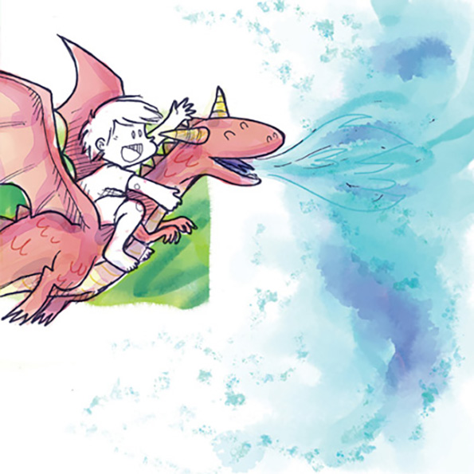

Ilustração de Thomas e o Dragão felizes. O dragão solta pela boca o que parece flamas azuis.
E o dragão, num primeiro impulso
daquela vida mágica que Thomas lhe deu,
cuspiu labaredas azuis e bateu suas asas com força,
carregando Thomas para longe dali.